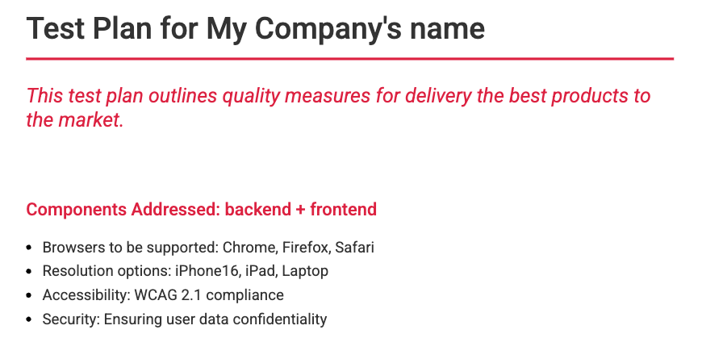

Download Our Chrome Extension
Get instant access to testing tools directly in your browser. Our Chrome extension helps you generate test plans, strategies, and more.
Download Chrome ExtensionUse Our Command Line Tool
Install our library to run powerful testing commands right from your terminal. Ideal for developers who prefer CLI workflows.
Install via npm:
npm install test-artifactsnpm run commandlineA PDF will be generated in the end containing you Test Plan:
 View on npmExplore Our GitHub Repositories
Access the source code, report issues, or contribute to the project. Our GitHub repositories offer detailed documentation and updates.
Visit GitHub Project